Evolução do fluxo
de inscrição
Curso e Colégio Objetivo
Redesenho de uma jornada digital responsável por conectar campanhas de aquisição às inscrições do Desafio Nacional, Concurso de Bolsas e Simulado Aberto.
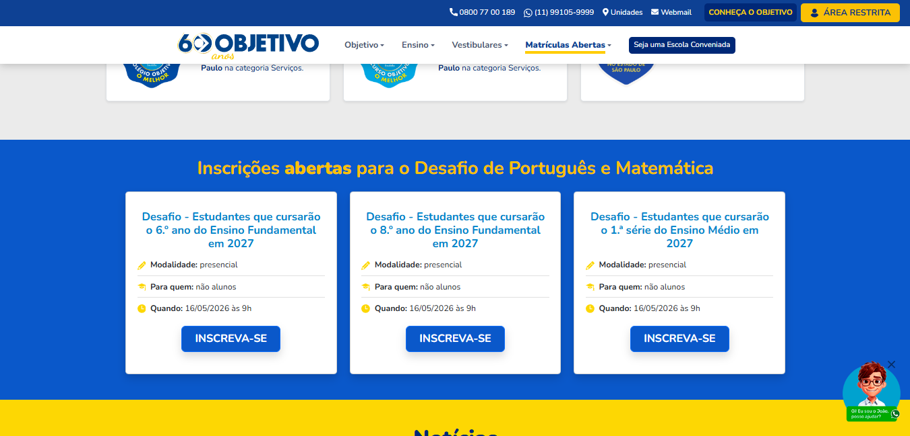
Um produto de aquisição dentro do ecossistema Objetivo
Desafio Nacional, Concurso de Bolsas e Simulado Aberto são produtos recorrentes do Curso e Colégio Objetivo, utilizados ao longo do ano como parte da estratégia de aquisição de novos alunos.
O fluxo digital conecta campanhas de marketing à inscrição efetiva do candidato e, por isso, qualquer fricção nessa jornada pode impactar diretamente sua conclusão.
Milhares de inscrições
Produtos consolidados, recorrentes e utilizados em diferentes momentos do calendário educacional.
Marketing + produto
A experiência conecta campanhas de aquisição ao sistema responsável por efetivar a inscrição.
Ponto crítico de conversão
O fluxo precisa transformar interesse em uma inscrição concluída com o menor nível possível de fricção.
Um fluxo funcional, mas com fricções acumuladas
A experiência anterior cumpria seu papel, mas exigia que o usuário atravessasse etapas redundantes e pouco progressivas antes de concluir a inscrição.
O problema não estava apenas na interface visual. A própria estrutura do fluxo adicionava esforço desnecessário e quebrava o contexto da intenção inicial do candidato.
- Login obrigatório logo no início.
- Reescolha da categoria após autenticação.
- Regulamento com baixa escaneabilidade.
- Formulário com alta carga de informação.
- Etapa adicional de conferência de dados.
- Etapa adicional de confirmação próxima da conclusão.
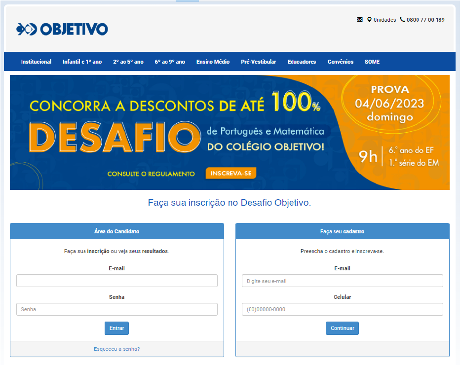
Login e cadastro eram apresentados como caminhos separados logo na entrada.
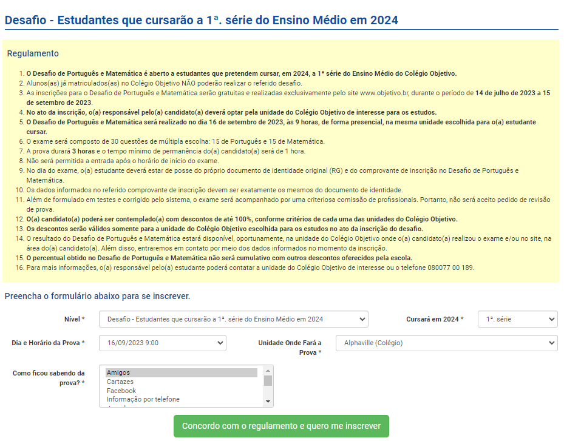
Regulamento denso e formulário concentravam muita informação em uma mesma etapa.
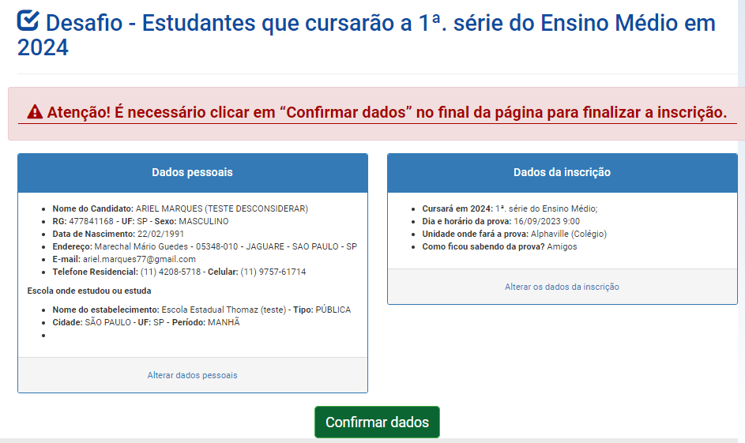
Uma etapa adicional de conferência introduzia novo esforço imediatamente antes da conclusão.
Lendo a jornada como um funil de conversão
Ao analisar o produto como uma jornada de conversão, cada etapa passou a representar também um potencial ponto de abandono.
Cada etapa adicional aumentava o esforço necessário para chegar à conclusão.
Princípios que guiaram a evolução do fluxo
Reduzir fricção
Remover etapas que não geravam valor para o candidato.
Preservar contexto
Manter a escolha realizada antes do login ao longo da jornada.
Progressão
Apresentar informações e ações de forma mais gradual.
Estados claros
Fazer a interface comunicar rapidamente o próximo passo.
Conversão
Diminuir incerteza e esforço nas etapas críticas.
Uma única entrada para usuários novos e recorrentes
A nova experiência passou a utilizar o CPF como ponto único de entrada. A partir dessa informação, o sistema identifica o estado do usuário e adapta a interface sem exigir que ele escolha previamente entre entrar ou se cadastrar.
CPF reconhecido → senha
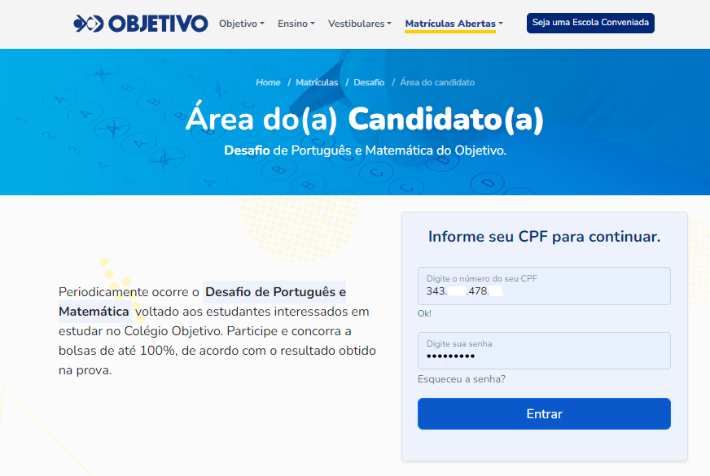
Para candidatos já cadastrados, a autenticação aparece somente após a identificação pelo CPF.
CPF não encontrado → cadastro
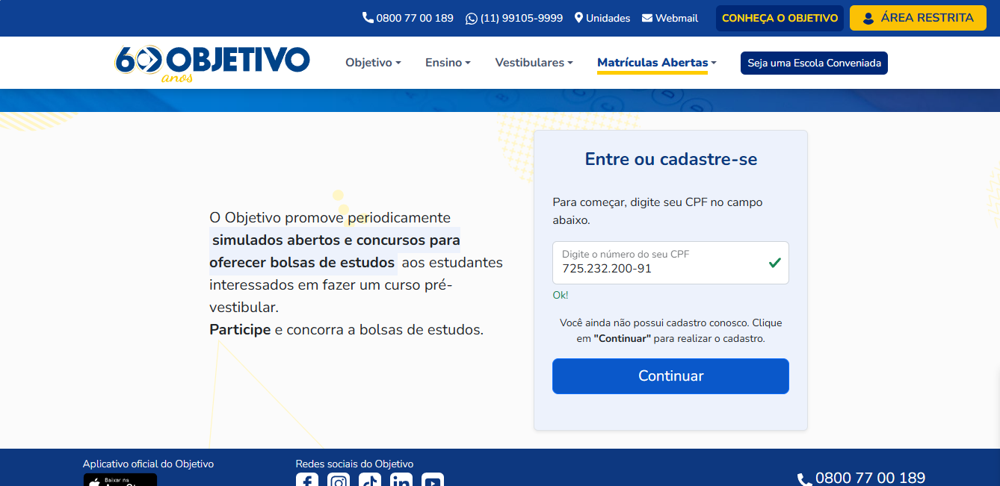
Para novos candidatos, a mesma entrada identifica o estado e orienta a continuidade do cadastro.
A validação é realizada de forma assíncrona no backend. O retorno atualiza o estado da interface sem recarregar a página, mantendo a interação rápida e sem impacto perceptível na experiência.
Regulamento e inscrição em uma experiência mais estruturada
O conteúdo obrigatório do regulamento continuou presente, mas passou a ser apresentado dentro de uma interface com hierarquia e organização visual mais consistentes com o restante da experiência.
Os campos relacionados à inscrição também passam a fazer parte desse mesmo contexto, reduzindo mudanças abruptas de interface ao longo do fluxo.
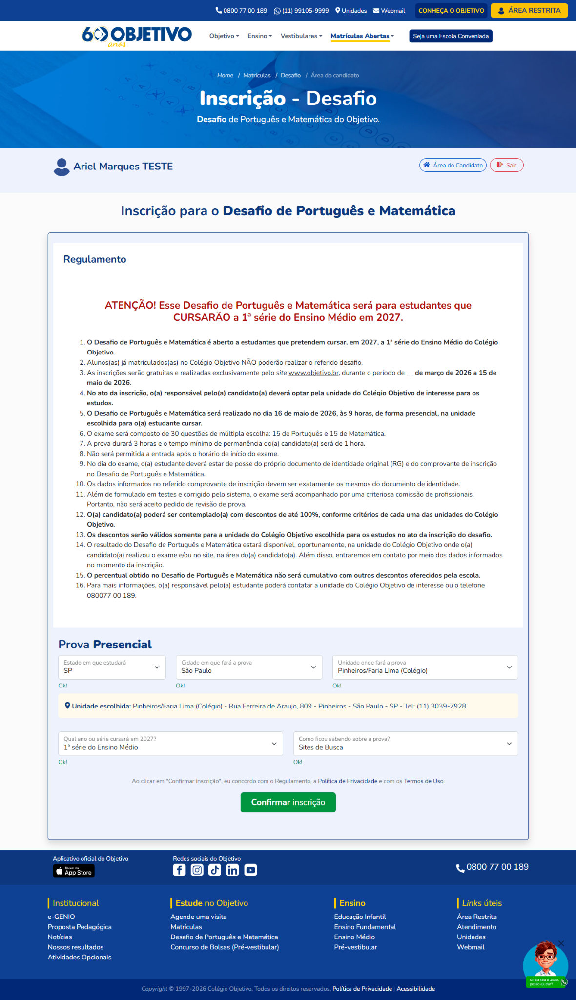
A evolução não foi apenas visual
Além da modernização da interface, o projeto encurtou a jornada, removeu decisões redundantes e passou a preservar o contexto da ação inicial do usuário.
Login e cadastro separados
O candidato precisava primeiro interpretar qual dos dois caminhos deveria utilizar.
CPF como ponto único de entrada
Uma única interação passa a determinar automaticamente qual deve ser o próximo passo.
A categoria precisava ser escolhida novamente
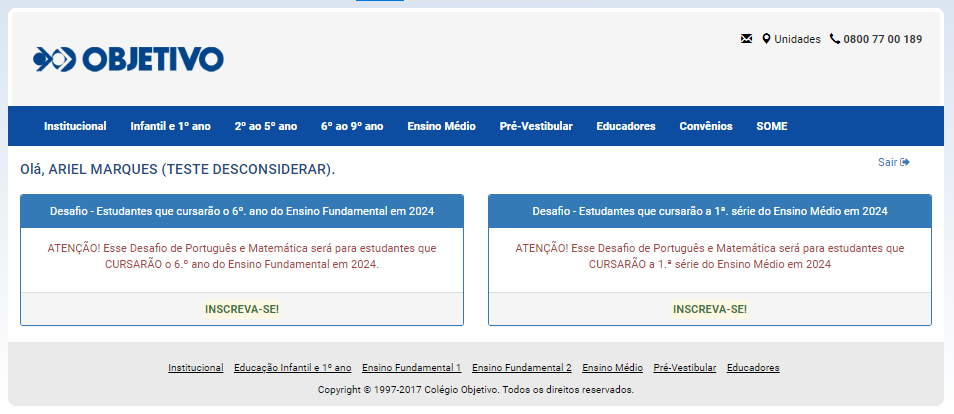
Mesmo após iniciar a inscrição para um desafio específico, o usuário precisava realizar uma nova escolha.
Contexto preservado desde a home
A categoria escolhida no card inicial acompanha o candidato durante as etapas seguintes.
Conferência adicional antes da conclusão
Mesmo depois do preenchimento, uma nova confirmação era necessária para finalizar a inscrição.
Estado de sucesso direto e explícito
A conclusão agora leva diretamente a um estado claro de sucesso e ao comprovante da inscrição.
Menos etapas entre intenção e conversão
A evolução reduziu etapas redundantes no caminho até a inscrição. A reescolha da categoria após o login e a etapa separada de conferência de dados deixaram de fazer parte da jornada atual.
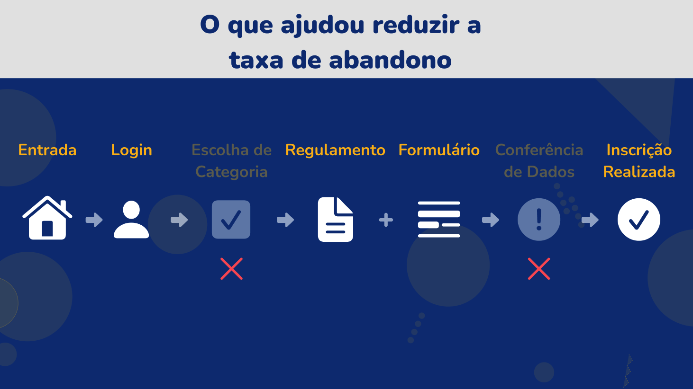
A jornada continua depois da inscrição
A confirmação da inscrição não foi tratada como o fim da experiência. O fluxo também evoluiu nos momentos posteriores, reforçando segurança e reduzindo incertezas antes da prova.
Confirmação imediata.
O candidato recebe feedback claro de que a inscrição foi concluída.
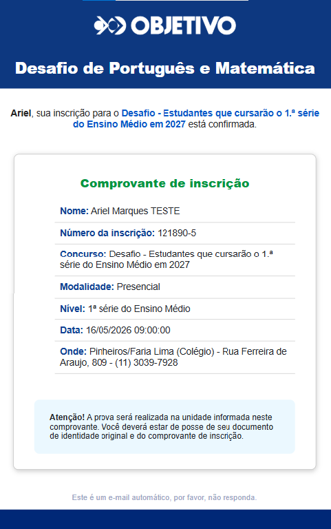
Comprovante estruturado.
Os principais dados da inscrição também ficam disponíveis por e-mail.
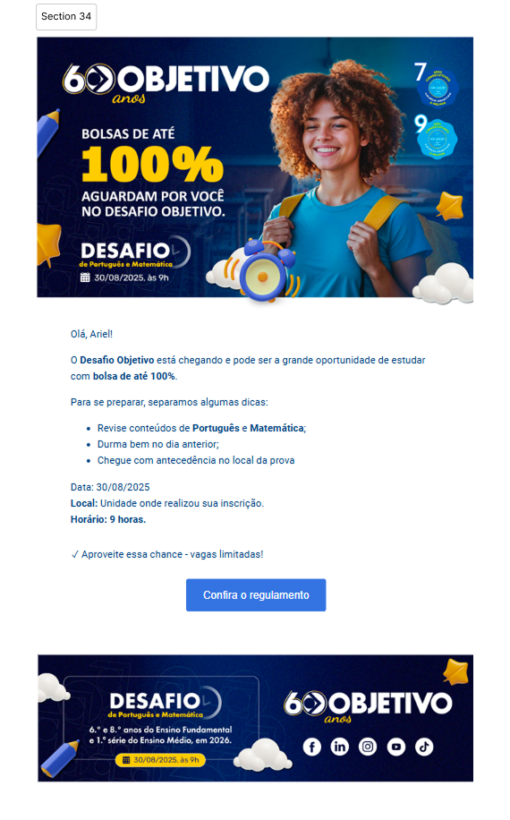
Continuidade da jornada.
A comunicação pré-prova recupera informações importantes próximas à data do evento.
Impacto percebido
O acompanhamento do produto indicou evolução positiva em pontos importantes da jornada. Métricas internas e números absolutos não são apresentados publicamente por confidencialidade.
Aprendizados e próximos passos
Aprendizados
- Estruturar métricas e critérios de sucesso desde o início.
- Tratar cada etapa da jornada como parte de um funil.
- Reduzir esforço antes de adicionar novas interfaces.
- Aproximar decisões de UX das possibilidades técnicas.
Próxima hipótese de evolução
Uma oportunidade futura seria remover o login como barreira inicial e utilizar os próprios dados do formulário para identificar o usuário apenas quando necessário.
Clique no produto e início imediato do formulário.
CPF e e-mail verificam se já existe cadastro.
Senha solicitada apenas quando necessária para concluir.
Lembrete para quem iniciou a inscrição e não concluiu.
Uma experiência que continua evoluindo
O fluxo atual está em uso nos produtos Desafio Nacional, Concurso de Bolsas e Simulado Aberto do Curso e Colégio Objetivo.